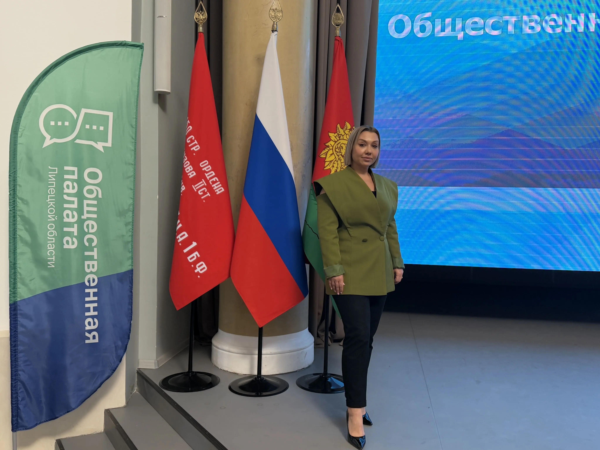

Лялякина Юлия Юрьевна
Адвокат
Председатель ННО Коллегии адвокатов «АДВОКАТСКОЕ ПАРТНЕРСТВО» г.Липецка Липецкой области, адвокат, регистрационный номер 48/528
- В 2008 году окончила с дипломом об отличии Липецкий Государственный Технический Университет «Юриспруденция». С 2008 года проходила стажировку у адвоката в адвокатском кабинете в качестве помощника адвоката.
- С 2008 года являлась аспиранткой кафедры социологии гуманитарно- социального факультета ЛГТУ по специальности – «Политические институты. Этнополитическая конфликтология, национальные и политические процессы и технологии». За время обучения в качестве аспиранта участвовала в конференциях и была опубликована в 17 сборниках ВУЗов г.Липецка и других субъектов РФ.
- В 2010 году успешно сдала квалификационный экзамен, получив статус адвоката. Общий стаж работы по юридической специальности – 20 лет, в том числе 16 лет в статусе адвоката. Практикует по гражданским, уголовным, административным делам, участвует в качестве представителя в Арбитражных судах РФ, а также судах общей юрисдикции и у мировых судей. Специализируется на бракоразводных делах, спорах о разделе общего совместного имущества между супругами.
- С 2016г. является председателем ННО Коллегии адвокатов «АДВОКАТСКОЕ ПАРТНЕРСТВО» г.Липецка Липецкой области. Также, является членом Липецкого регионального отделения ассоциации юристов России. Активно участвую в жизнедеятельности данной организации. Принимает систематическое участие в “Днях бесплатной правовой помощи населению”, читает лекции в школах г. Липецка на темы: “Ответственность несовершеннолетних и ее виды”, “Преступления в сфере интернет- пространства”, “Юридическая специальность”.
- Распоряжением Губернатора Липецкой области И.Артамонова избрана в члены Общественной палаты Липецкой области 8 созыва на период с 2026г. по 2029г.
- Адвокат имеет следующие награды: в 2023г. награждена почетной грамотой Липецкого областного Совета депутатов, а также почетной грамотой Федеральной палаты адвокатов РФ; в 2022г. награждена почетной грамотой Липецкого отделения Ассоциации юристов России; в 2019г. - почетной грамотой Адвокатской палаты Липецкой области; 2021г. - благодарностью Адвокатской палаты Липецкой области; 2019г. - благодарностью Липецкого отделения Ассоциации юристов России.
Награды
Виды деятельности и секторы экономики

Уголовное право и уголовный процесс

Гражданское право

Административные дела, административный процесс и административное судопроизводство
Уголовное право и уголовный процесс
Гражданское право
Административные дела, административный процесс и административное судопроизводство
- Строительство и девелопмент
- Финансовый сектор
- Промышленность
- Торговля и ритейл
- IT и цифровые технологии
- Транспорт и логистика
- Недвижимость
- Медиа и коммуникации